[旅遊] 臨時起意的大阪快閃！一週前買機票、一天前訂住宿的三天兩夜體驗
這是一次非常臨時的決定。在出發前一週才買機票、出發前一天才訂住宿，展開了一場「週五下午去、週日下午回」的日本大阪三天兩夜快閃之旅。究竟臨時訂行程有哪些利弊？而 AI 又是如何成為這趟旅程的最佳行程規劃助手？
臨時起意的大阪快閃：機票與住宿的預算觀察
這一次旅遊決定得非常臨時。我從來沒有在出發前一週才買機票，也從來沒有在出發前一天才訂住宿。
這樣臨時訂行程有好有壞：
- 住宿方面：是真的有機會在 Agoda 上撿到便宜。這次訂到一個人每晚不到 2,000 元（大約 1,800 元左右）的獨立房間，以臨時訂房來說並不算貴。
- 機票方面：相對來說就比較貴。不過根據我的觀察，票價落差也沒有到太大，因為早在出發前兩三個月看時，廉航的機票就已經很高昂了。雖然出發前一個禮拜看有稍微漲價幾百塊，但整體差異並不大。
我後來買到去程搭乘 虎航 到大阪，回程從大阪回桃園搭乘 捷星航空 ，剛好去回程都是廉航。最後算出來的總票價大約是一萬七千元左右，這價錢可能跟提早買的傳統航空差不多。這點可以記錄下來，以後如果想玩，可以留意傳統航空有沒有機會拿到一萬七來回日本的票價。
我稍微算了一下，這一趟旅程全部加起來大約花了 25,000 元。主要的費用都集中在機票上，當地花費加起來大約台幣 3,000 元，住宿兩個晚上則是 3,600 元。兩萬五千元的總金額跟我去日本玩五天差不多，可見臨時出發雖然縮短了天數，但整體預算並不會有太大變化。
把日本當家鄉？五去日回的「快閃」時間安排
這一次的體驗，是故意想要星期五請假，連接星期六、日到日本快閃三天。事後覺得這樣的體驗很足夠，很有出國感。
去程飛機在星期五下午四點，回程則是星期日下午三點多，回到台灣大約快六點。整個體驗還滿不錯的，有點像以前當學生搭車回老家，然後星期日再搭車回來的感覺。把日本當作自己家鄉的感覺，在時間安排上還滿妙的。
要排到這麼漂亮的時間其實很挑地點。我查過，即使是一般的傳統航空，也沒有星期五下午去、星期日下午回這麼完美的班次。我是因為星期五早上有事，不然之後也可以試試看星期五早上去的行程，選擇可能會更多。總之，這趟我主攻的就是「五去日回」的午去午回時間。
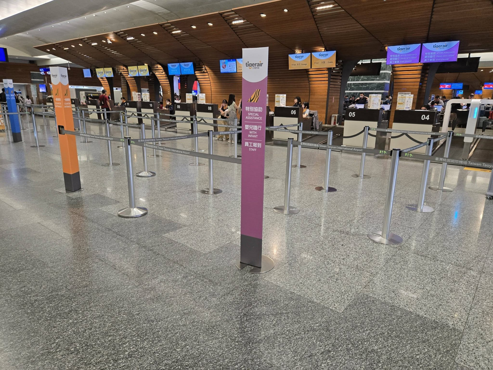
行程規劃大功臣：排行程最優的竟然是 Gemini 3.5 Flash！
因為這不是我第一次去大阪，所以很清楚要搭什麼樣的電車。不過值得先提的是，這一次我主要都是用 AI Agent 在幫我定點查行程。
我設定了幾個一定要去的地點，例如嵐山、大阪的一些神社，還有住吉大社。我先把定點找出來，接著請各大 AI（如 Google Gemini、OpenAI ChatGPT 還有 Anthropic 的 Claude Opus）幫忙規劃這三天的行程。
在排完行程後，我覺得表現最優異的是 Gemini。我其實沒有開到很強的 Agent，只是用 Gemini 3.5 Flash 這種程度的 AI，它排行程的能力就非常值得推薦，而且基本上免費帳號就能應付，反應也很快。
只有 Gemini 查得到的獨家「室內轉乘」路線
為什麼說 Gemini 排得好？因為它找出了我沒想過的行程。一般我要從大阪到京都，別的 AI Agent 都推薦在「大阪梅田站」換車。但 Gemini 提到一個換車方式：
先搭地下鐵到「新大阪」，再從新大阪換乘 JR。
這種換法可以 全程走在室內、吹冷氣 ，商店街也比較明亮，位置與動線更好找。如果是搭 JR，用新大阪當轉乘點還蠻順的，這條路線只有 Gemini 提到，其他家都沒寫，甚至直接用 Google Maps 查都不一定查得到。
在規劃過程中，各家 AI 還幫我順出一個結論：只要住在 「日本橋」 附近，就能把整串路線串起來。所以我後來選擇住在日本橋，主要是搭阪急去京都嵐山時比較方便。
這裡也跟大家推薦，如果要前往京都嵐山且有預算考量，在時間差不多的情況下可以選擇搭乘 阪急 。雖然下車後走路會稍微多一點，但反正都是走路行程，沒什麼差。阪急的嵐山站可以從大阪日本橋那邊連接過去，金額看起來是最低的。去嵐山大約需要轉車兩次，但還算好轉。轉車的細節資訊 AI Agent 都能排得很好，再搭配日本的「乘換案内」APP，就很容易找到對應的月台。
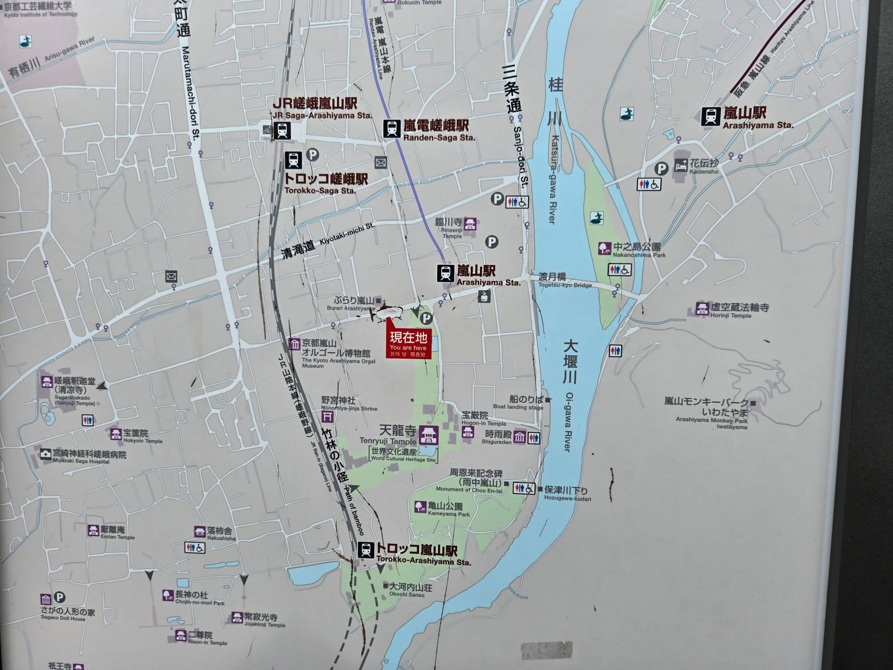
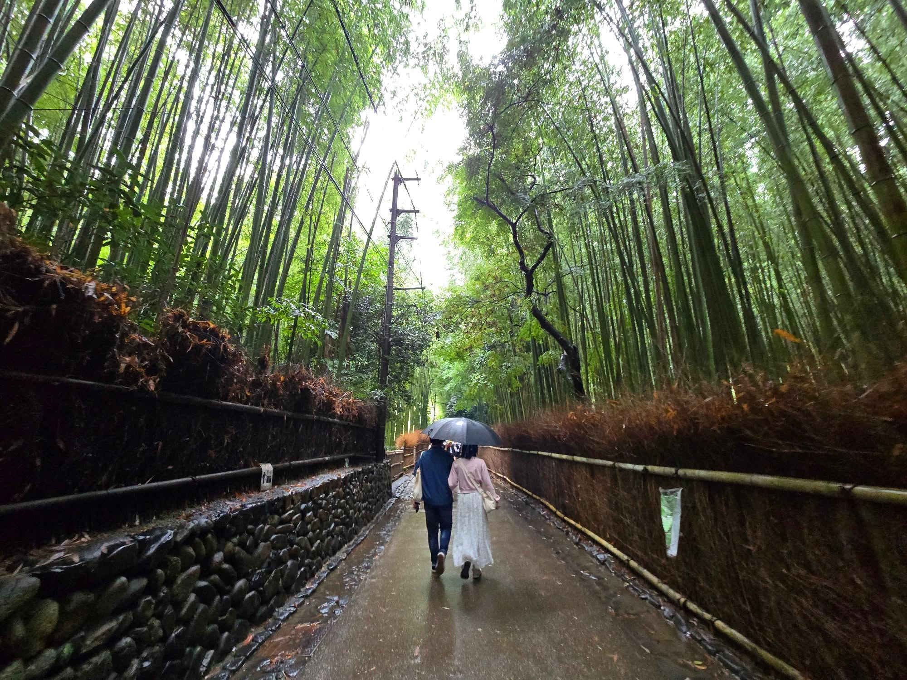
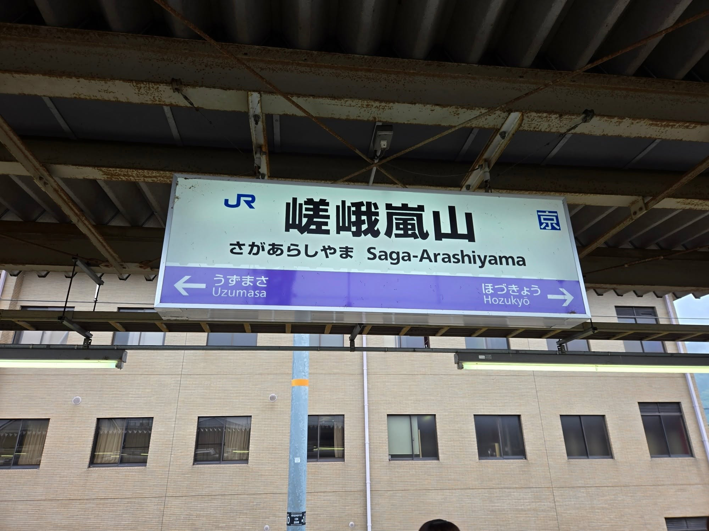
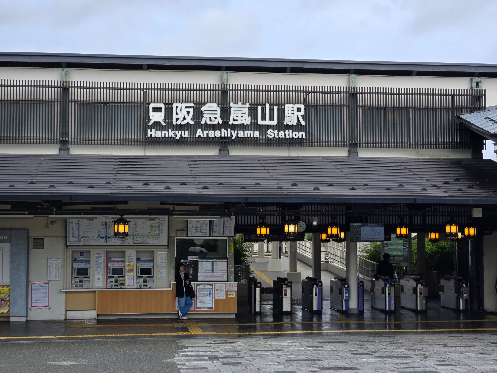
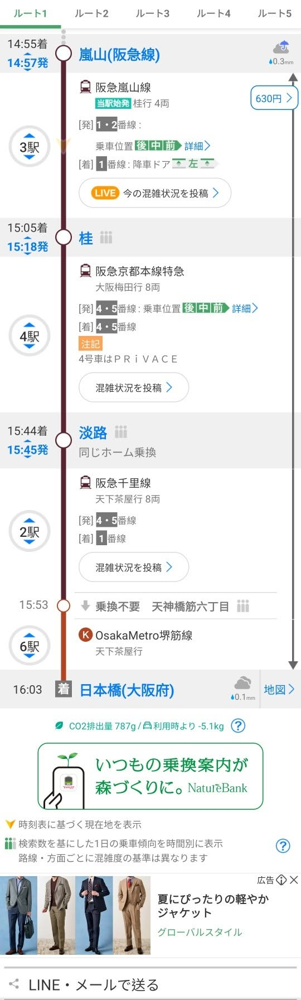
第一天的出境大長征與關西機場快速通關
星期五下午出發那天碰巧放颱風假，所以我的請假變成了公假，沒有被扣到。那天因為颱風的關係下暴雨，到了高鐵站時，大家都等不到計程車。
這趟出發我只背了一個無印良品的後背包，手上另外拿一個鞋袋裝鞋子，因為當天雨實在太大。後來覺得這樣的配置還蠻不錯的： 一個手提袋裝鞋子加一個後背包 。通常出國會想穿拖鞋，如果把拖鞋放進背包可能會增加重量，分開用手提袋裝還不錯，手提袋有時還能拿來裝寶特瓶、裝摺疊傘，很方便。這種短期旅行的裝備玩法可以記錄下來。
到了桃園機場就沒雨了。因為提早了三個多小時到機場，現場櫃檯空空蕩蕩，沒什麼人在排隊。我直接過去就順利報到並拿到機票。
因為時間非常充裕，我先搭乘機場捷運前往第二航廈，去二航的觀警台看飛機。接著，我故意選擇直接從第二航廈出境，想試試看能不能拿第一航廈的機票從二航過海關，結果發現就這樣順順地走出去了。出境之後，我先一路走到屬於第三航廈區、也就是最遠的 D18 登機門去參觀。那邊看起來是新建築，基本上沒有什麼航班，走過去真的好遠。
看完 D18 之後，我再回頭折返，一路上靠著電扶梯輔助、全程狂走，跨越了整個機場的對角線，大約花了 30 分鐘，才終於走到位於第一航廈的 B1 登機門。還沒出國就先走了一大段路。
這天搭乘虎航下午四點的飛機，原本很期待他們機上剛啟用的 WiFi 影片服務（剛啟用有免費體驗活動，需自備手機或平板連線），可惜當天機上設備可能還沒設定好，最後還是沒辦法用，這算是題外話。
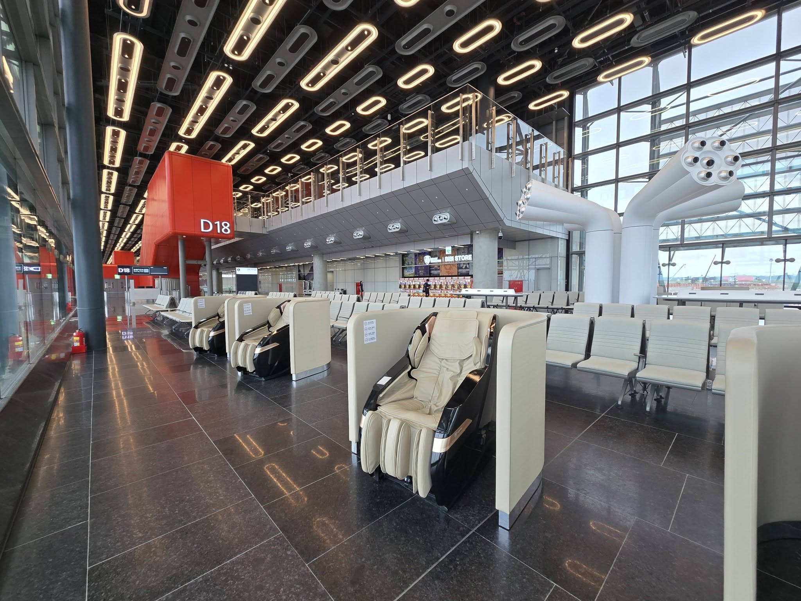
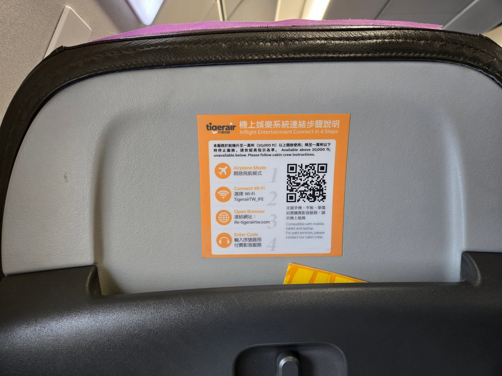
機場小發現：無標籤鹼性水與強大的電子支付販賣機
在機場走動的過程中覺得需要買水，剛好看到黑松的販賣機，賣的東西其實沒有特別貴。其中有一款 30 元的鹼性離子水，口感普通、可喝，但瓶子設計很特別，上面沒有任何印刷或包裝紙，所有的資訊都是用雕刻或瓶身線條來呈現，質感還不錯。過海關之後很需要水源，不然去買珍珠奶茶可能要花個七、八十元。
值得一提的是，機場的黑松販賣機除了收現金和信用卡，也支援 悠遊卡、Line Pay、全支付 等電子支付，我覺得非常棒。
我還在第二航廈的三樓找到了外幣提款機，雖然我沒有實際使用，但那裡可以直接提取美金、日幣、人民幣和港幣。現場也有看到販售電子用品的免稅店，但很奇怪的是，這些電子用品雖然免稅，價格好像也沒有真的比較便宜。
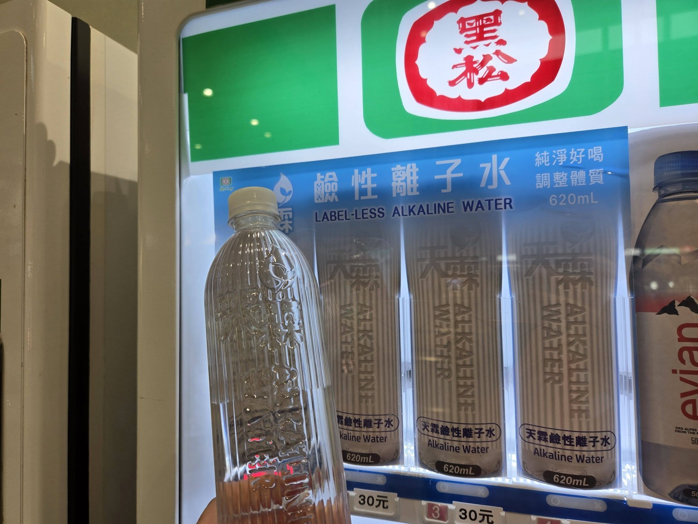
關西機場快速入境：高效的指紋拍照片分流新體驗
到了關西機場已經天黑。這次出關有一點很特別，機場機場把「按指紋和拍照」的機台直接設置在搭乘接駁電車的位置，在非常前面的關卡就可以先完成。
按完指紋、拍完照之後，系統會顯示你現在屬於 A、B、C、D 哪一個分流排隊隊伍，大家可以按照自己被分配到的英文字母去排隊，做好旅客分流。等走到移民官櫃檯時，就只要出示護照就好，不用再重複按手指。整個通關速度因此變得非常快。雖然我當天抽到 D 隊伍，但我還是順勢使用 A 的軌道，因為當天根本沒有人排隊，所以走哪一線都一樣，雖然分流系統做得很完整，但當時沒必要分流。
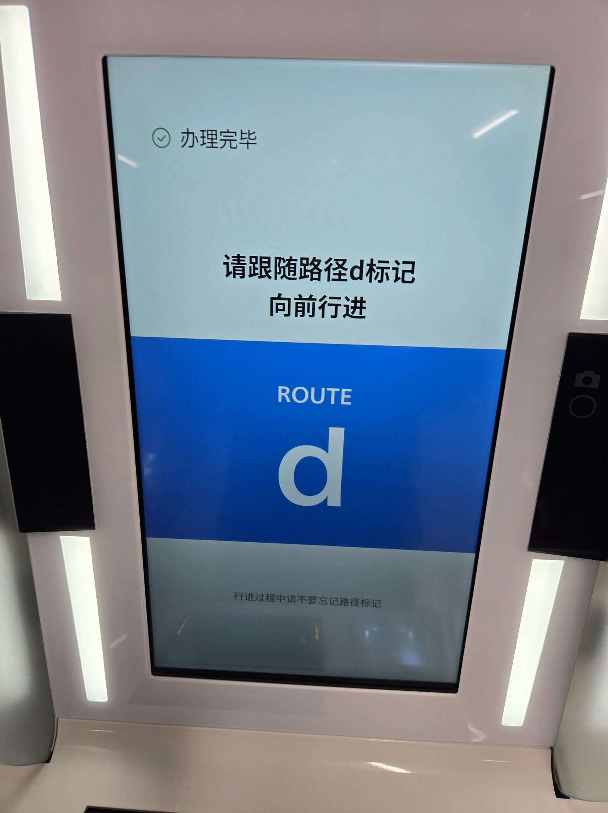
難波/日本橋的交通與深夜美食體驗
日本入境之後，從關西機場到難波，大家通常會搭乘特急 Rapi:t。但南海電鐵其實有一種 「空港急行」 的列車，同樣可以到難波，班次很多（大約 15 分鐘一班），基本上都有位子坐，而且不需要加購特急券。我現在已經很熟了，都不會多花錢去搭 Rapi:t。
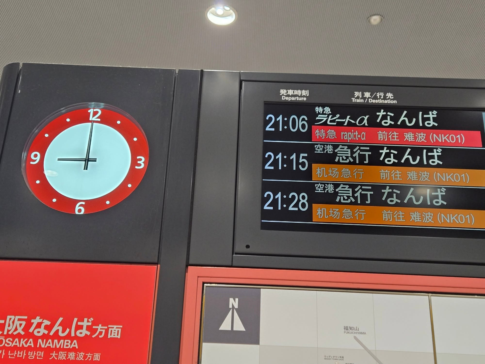
搭乘空港急行有一個重點： 不用一路搭到終點站難波 。中間有一站叫 「天下茶屋」 ，從天下茶屋可以直接轉搭地下鐵前往「日本橋站」，整段行程會非常順暢，這也是我選擇住在日本橋的原因。如果要往天王寺，也可以從這裡到動物園前站轉車，天下茶屋是一個非常好利用的轉乘點。
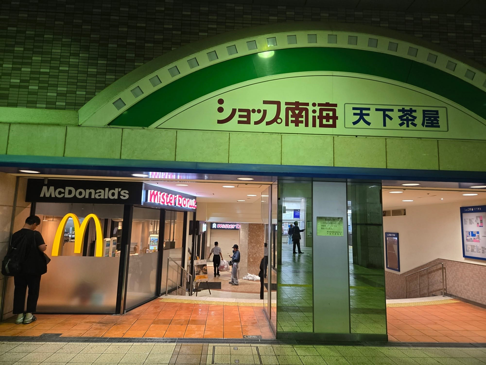
抵達住宿附近時已經晚上十點多、十一點了。我在附近看到一個長得像紅豆餅的大顆 「十元」 。它裡面加了起司，吃的時候可以拉得很長。但我個人覺得實在難吃，起司有一種咬不斷的感覺，我本來預期的是紅豆餅的口感，最後我沒吃完，只把外層像紅豆餅的餅皮吃掉。因為沒吃晚餐肚子滿餓的，後來去全家便利商店買了雞排和肉包，肉包表現很正常，無骨雞排偏油膩，整體算普通。
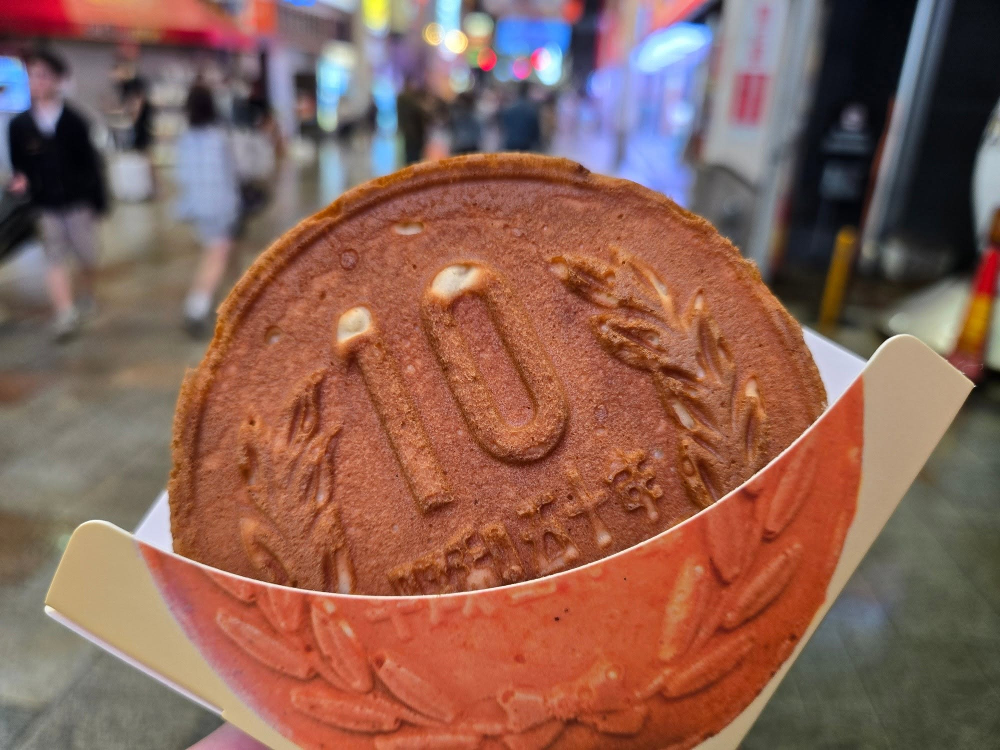
第二天的突發考驗：JR 大亂點與新幹線果斷救援
隔天星期六，從日本橋走路去難波的路上，看到一家叫 Cafe Break 的早餐店，風格很像名古屋早餐（點茶與吐司），有機會可以試試。但我當天比較想吃麥當勞的楓糖鬆餅堡，就沒有進去。
當天的路線其實跟原本規劃的完全相反。原本計劃先搭阪急去京都嵐山，接著搭 JR 到鐵道博物館，再到京都車站，最後搭 JR 回來。後來我參考雨勢預報，決定把行程翻轉過來，下午再去嵐山，早上先去鐵道博物館。這樣一來，路程就變成先搭 JR 去京都車站（也就是前面提到要去新大阪換車的路線）。
於車到難波站，搭車到新大阪，準備在新大阪換 JR 的 Local（普通車）線。沒想到因為颱風外圍環流影響，日本那邊大雨導致 JR 在來線嚴重延誤。
好在，我選擇了新大阪站。
因為 Local 線的班表大亂，8 點、9 點、10 點的班次全部擠在同一個螢幕上，而且順序是錯綜複雜的，不知道哪一個會先到，我覺得等下去不是辦法。看著月台人越來越多，我果斷改搭沒有延誤的 新幹線 。新幹線自由座花了不少錢，票價是 1,450 日圓，從新大阪到京都只有一站，車程大約 10 分鐘，距離就像新竹到桃園一樣。
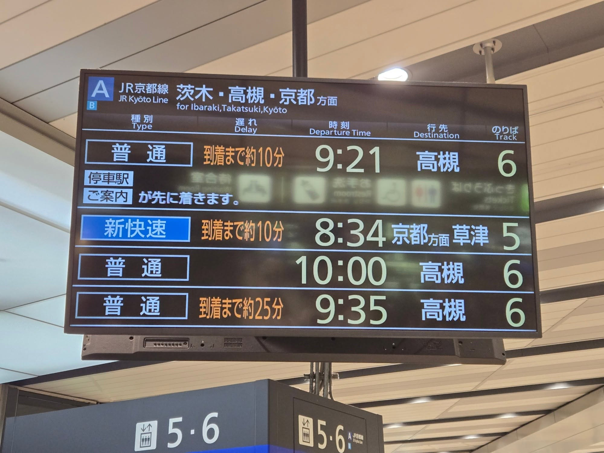
不過在買票時覺得有點麻煩，因為正在 JR 站內，本來想試試能不能直接刷 IC 卡進去新幹線區，但好像不行。我對新幹線和 IC 卡搭配的機制還不夠熟悉。最後還是直接買了實體票才進站。不過買實體票時好像又可以搭配刷 IC 卡，關於新幹線配 IC 卡的正確扣款順序，我覺得需要先搞懂一下。
後來我似乎沒有刷得很乾淨，從京都轉車搭一站區間車到鐵道博物館那一站（梅小路京都西站）時，在出口閘門卡住，被站務員要求補票。這段區間車的正規票價應該是 150 日圓，但我最後被收了 170 日圓，沒有被罰款太多，還可以接受。這個配合 IC 卡刷卡轉乘的經驗跟大家分享一下，有時有些門可以直接穿過去，可能就會漏刷幾段。
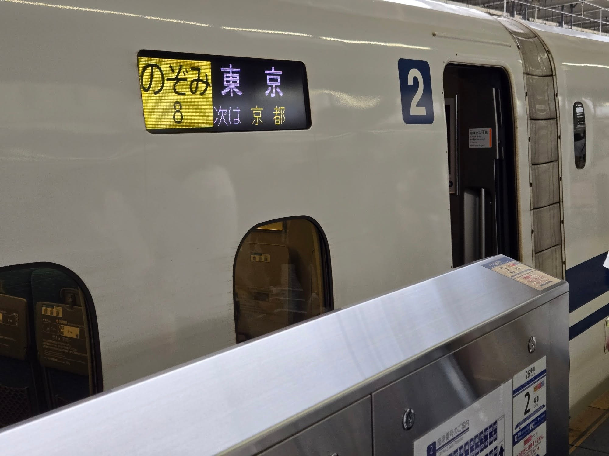
鐵道迷聖地：京都鐵道博物館，與解鎖「JR貨物貨櫃便當盒」
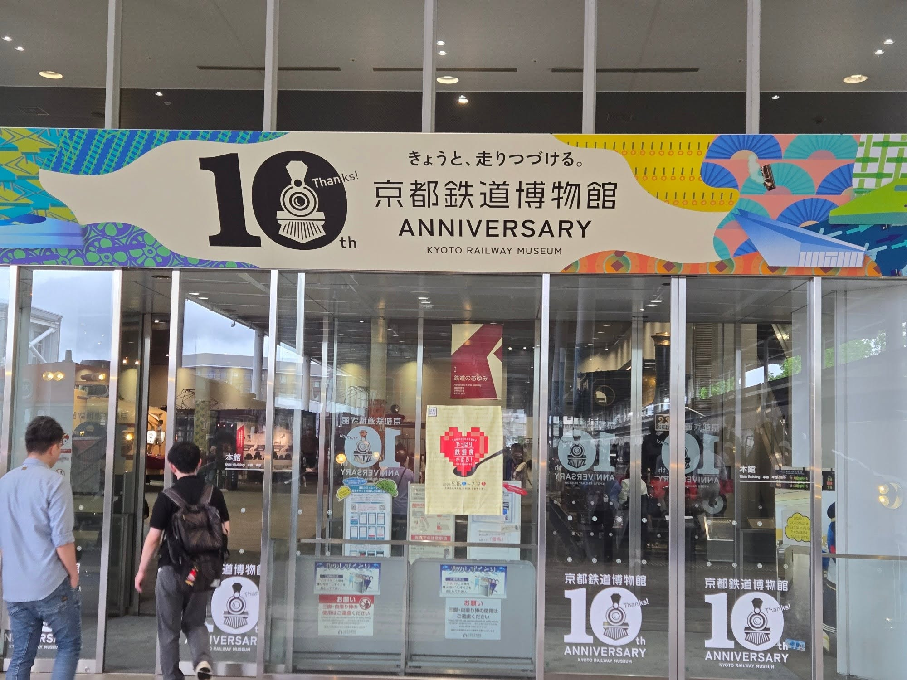
京都鐵道博物館的規劃非常齊全，裡面內建餐廳，展示了許多古董文物，甚至還可以現場印製當日車票，投入內部的模擬閘門，觀看車票在機器裡被捲來捲去的有趣過程。現場還有火車試駕的體驗，不過因為排隊的人實在太多，而且我之前玩過，這次就直接跳過。
整趟讓我最開心的，不是那個很有古董感、很有歷史的扇形車庫，而是買到了限定便當。現場通常會賣新幹線車頭造型的便當盒，但我選了一個 「JR貨物」的貨櫃造型便當盒 。現在放在桌上看，還是覺得買得太對了！裡面裝什麼其實不重要，有吃飽就好，雖然價格偏貴，但我主要是為了那個塑櫃殼。後來回到飯店，我用洗手乳把便當盒的油漬全部洗乾淨，帶回家保存。
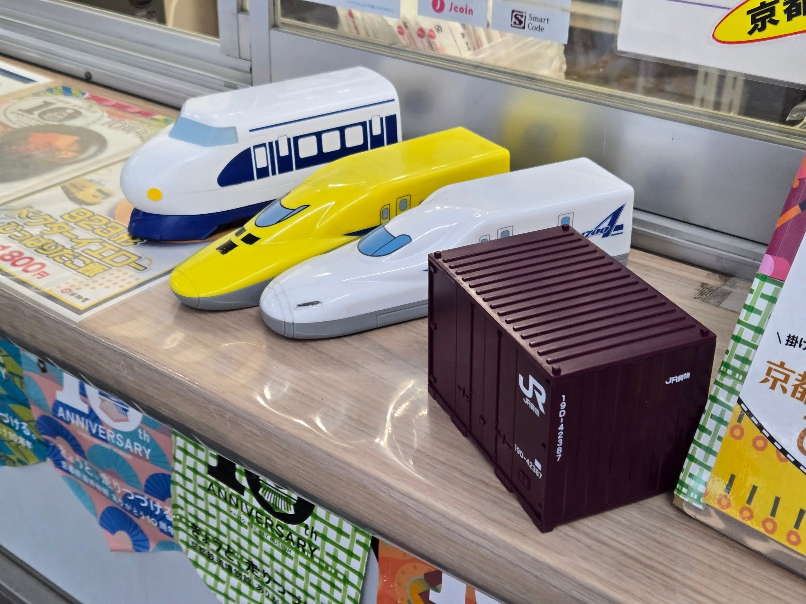
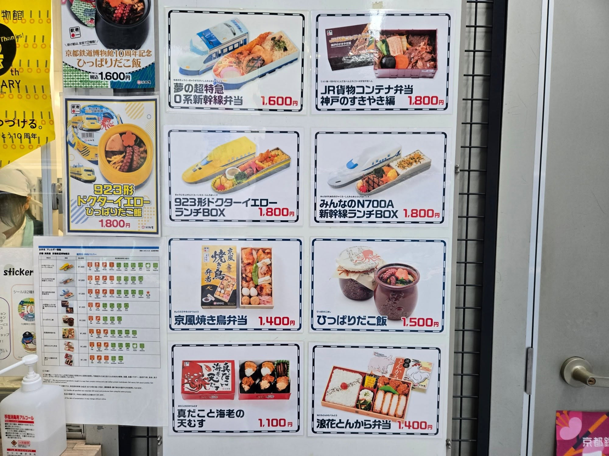
博物館的餐廳位於二樓，可以現場點餐，也可以帶自己買的便當過去吃，裡面有附免費的水。我覺得在這邊吃中餐、休息是一個很不錯的選擇，為了解鎖那個 JR 貨物貨櫃便當盒而做這個安排，非常值得。
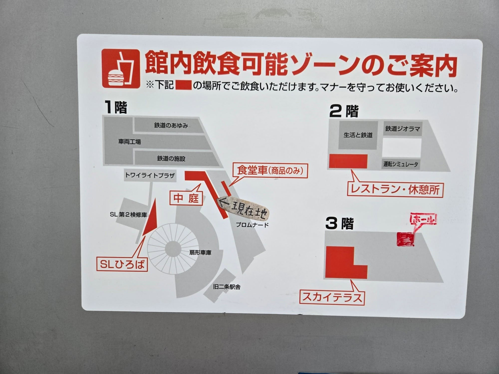
旅途中的細碎小觀察與廉航體驗對比
這次旅行還有一個意外的小發現。出發時是六月底，正逢夏天天黑時間較晚。當天逛完街回到住宿點時已經晚上七點多了，太陽竟然還沒下山，當下有種自己今天戰力很低的錯覺，但明明已經逛了很久。日照時間長，感覺可以逛得比較久。不過也可能是因為颱風外圍環流影響，天氣比較陰陰的，不然夏天通常會到三十幾度。這三天我遇到的氣溫基本上都不高，大約二十出頭度，非常涼快，也不至於到冷。
在交通上也發現一些趣事：
- 站名視覺設計：當日本的站名多達七個字時，系統會挑其中兩個字放大顯示。像「天神橋筋六丁目」，站牌就會把「天」和「六」放得特別大，其他字縮小，這種視覺設計還蠻有趣的。
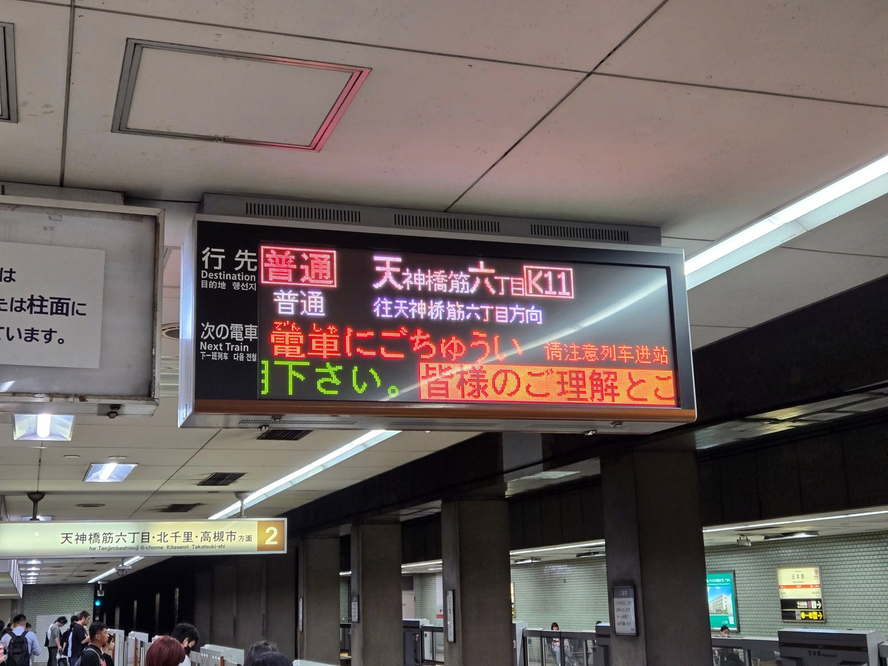
- 阪堺電車路面電車體驗：我是在地下鐵「動物園前站」出來後，走到旁邊轉乘路面電車，上車的這一站叫做「新今宮站前」。搭乘時有一個重點我漏掉了：這路面電車 上車要感應卡，下車要再感應一次 。我當時沒做好，不過因為每一段票都是均一價，後來司機在機器上按一按，就直接幫我把進出站紀錄補刷上去了。
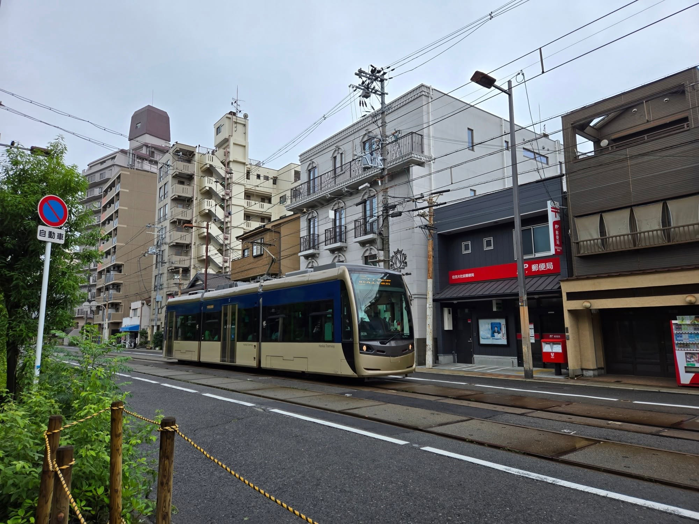
廉航體驗大對比：捷星與虎航的機上觀察
回程搭乘 捷星航空（機型 A320），有些習慣和同為廉航的 虎航 不太一樣：
- 捷星航空：駕駛艙門通常到最後一刻才關閉。另外可能因為剛好經過中午，空服員在飛機地停的時候就把遮陽板全部關上了，直到起飛前才叫大家全部打開。在餐點發送方面，捷星會推著餐車慢慢發餐，感覺訂餐的人比較多，但餐點就是一般的飛機餐長相。關西機場的 Check-in 全程使用自助機台，體驗跟新加坡機場很像，刷完之後再去櫃檯別上重量標籤即可。
- 台灣虎航：去程同為 A320。虎航發餐是空服員直接走到定位把餐交給你，不用推車出來，而且沒什麼人訂。
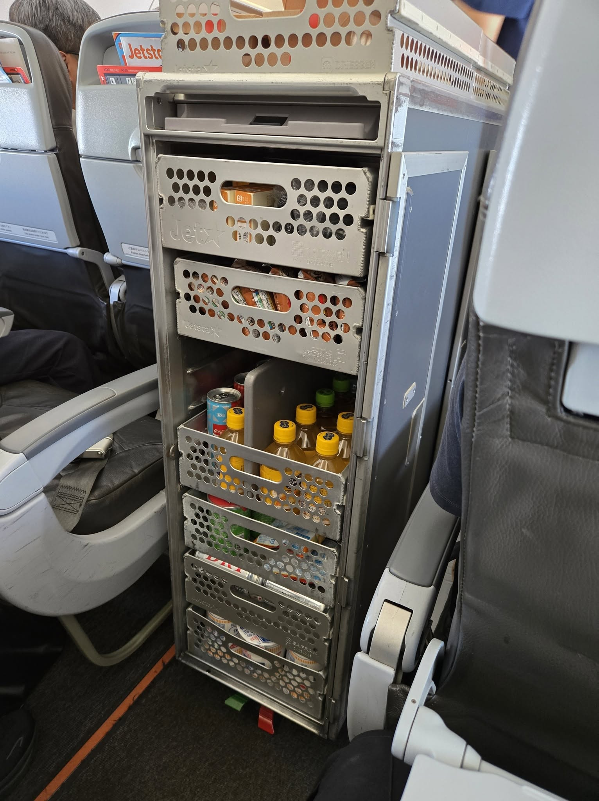